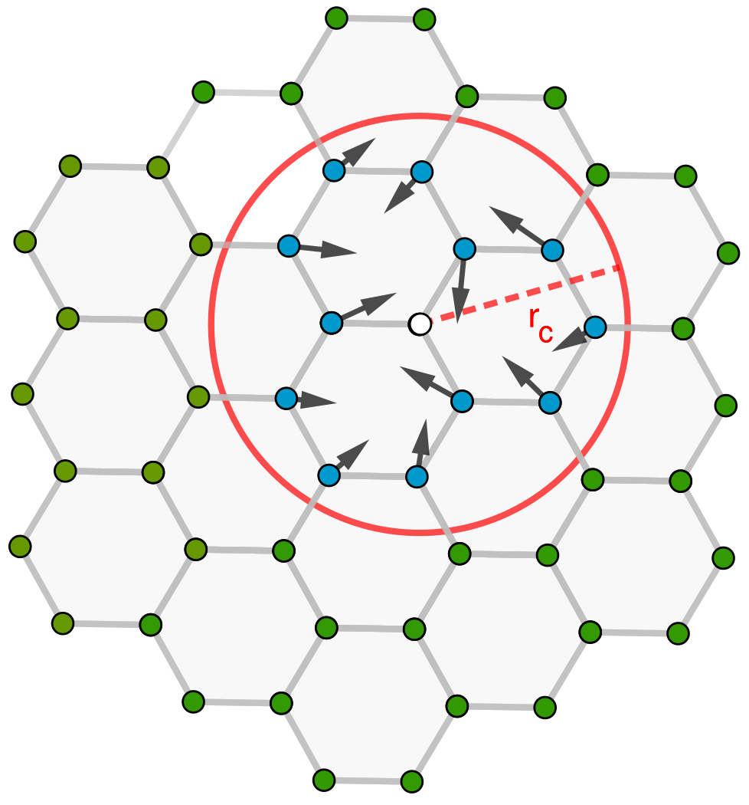

|
Tina Torabi I recently completed my Master’s degree in Mathematics at the University of British Columbia, where I worked under the supervision of Professor Christoph Ortner. Prior to my graduate studies, I interned at the Institute of Science and Technology Austria, under the supervision of Professor Bingqing Cheng. |

|
ResearchI'm generally interested in Machine learning (with application in learning interaction models), optimization, and approximation theory. |
|

|
Surrogate models for vibrational entropy based on a spatial decomposition
Tina Torabi, Christoph Ortner, Yangshuai Wang. To appear in MMS SIAM, 2024 arXiv We demonstrate that total entropy can be decomposed into contributions from atomic sites, providing a rigorous estimate of site entropy locality. This analysis indicates that vibrational entropy can be effectively predicted using a surrogate model for site entropy. To achieve this, we utilize machine learning to develop surrogate models based on the Atomic Cluster Expansion. |
|
The source code for this website. |